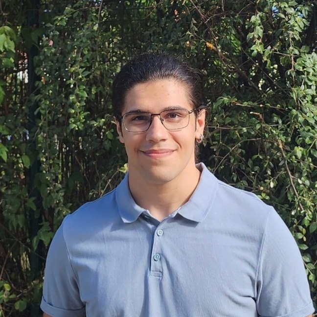
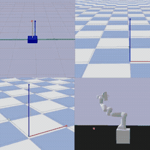

Jon Goikoetxea
I'm an Artificial Intelligence MSc student at Ensimag - INP Grenoble.
I'm broadly interested in optimal and learning-based control, with special emphasis on robot learning. My research aims to make autonomous agents more generally capable and efficient by leveraging optimization and machine learning methods.
As an MSc student in Ensimag, I worked on multi-objective reinforcement learning with Prof. Alexandre Donzé in the Verimag laboratory. Before coming to Grenoble, I obtained my BSc at the Public University of Navarre, where I worked with Prof. Jesús Palacián on learning for control in robotics and astrodynamics. I also worked with the UpnaLab research team led by Prof. Asier Marzo, mostly on simulations for acoustic holography.
Check out my projects on GitHub, visit my LinkedIn profile, or email me here.

Publications:
For an up-to-date list, visit my Google Scholar.

GCImOpt: Learning efficient goal-conditioned policies by imitating optimal trajectories
Jon Goikoetxea, Jesús F. Palacián
Learning for Dynamics and Control (L4DC) 2026
Webpage •
PDF